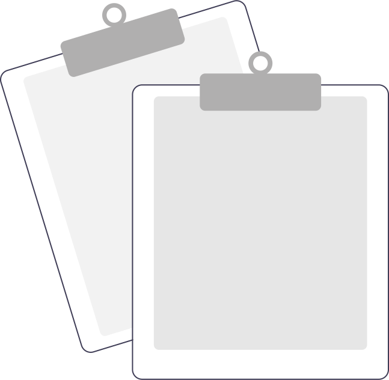

Contactos
@if (invitaciones && invitaciones.solicitudesEnviadas &&
invitaciones.solicitudesEnviadas.length === 0 && selectedSolicitudOption === "solicitudesEnviadas") {
}
@else {
@if(selectedSolicitudOption === "solicitudesEnviadas") {

}
@else if (invitaciones && invitaciones.solicitudesRecibidas &&
invitaciones.solicitudesRecibidas.length === 0 && selectedSolicitudOption === "solicitudesRecibidas") {
No tenes solicitudes enviadas
En esta seccion podes ver las solicitudes que enviaste a otros usuarios, una vez que las
acepten podras verlos en tu lista de contactos.
No tenes solicitudes recibidas
En esta seccion podes ver las solicitudes recibidas pendientes, una vez que las aceptes podras ver a los usuarios
en tu lista de contactos.
Solicitudes enviadas
Solicitudes recibidas
@if (contacts.length === 0) {
 }
@else {
}
@else {
 }
}
}
}
Mis contactos ({{contacts.length || 0}})
No tenes contactos registrados
😢
Mis contactos ({{contacts.length || 0}})
@for (contact of contacts; track $index) {{{contact.user.name}} {{contact.user.lastName}}
@{{contact.user.username}}{{contact.contactSince | date: 'dd/MM/yyyy'}}
{{contact.user.email}}